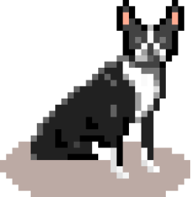

Education
- Bachelor’s degree from Southwestern University (where I thought I wanted to be a Physical Therapist).
- Master’s degree from Florida Atlantic University (where I realized I actually really liked data and making graphs)
- Doctorate from UNT Health Science Center (where I realized I really didn’t like academia, but still really liked data, graphs, and now R)
Current State
I fell in love with R and data science through my graduate research, using R and RStudio to wrangle, analyze, model, and visualize my data. I became passionate about growing the R community, and founded #TidyTuesday to help newcomers and seasoned vets improve their Tidyverse skills.
I am the Customer Enablement Lead at RStudio, helping our customers be as successful as possible with RStudio software in their environment.
In my home town of San Antonio, my wife and I run on the local trails, play with our Boston Terrier “Howard”, spend lots of time with our local families, grill/smoke plenty of meat, and are always on the lookout for great new food, especially churros.
Contact
You should definitely just tweet @ me @thomas_mock.